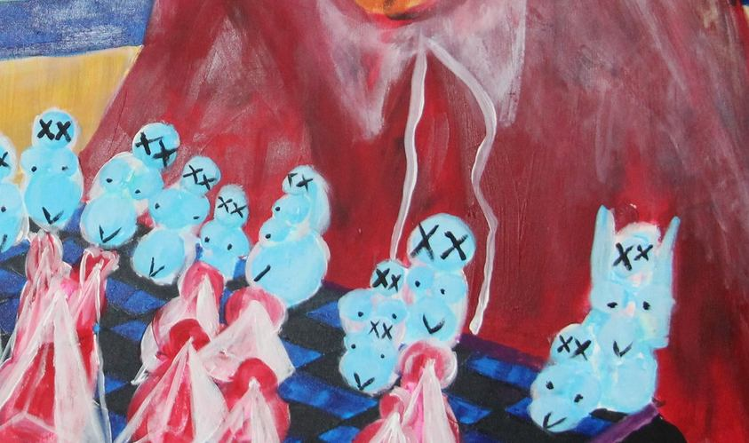
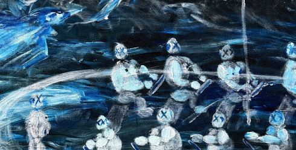
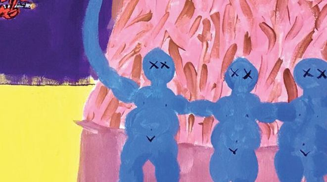
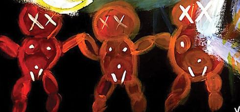
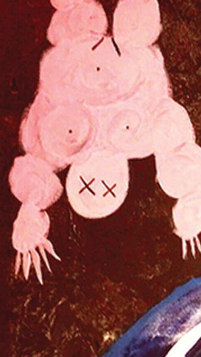
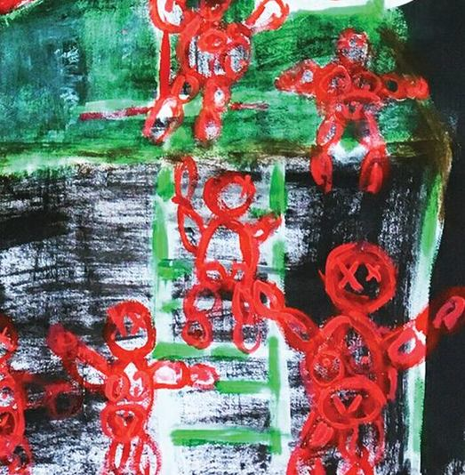

ArtbookletThirty-five works
YİĞİT
ÖZEN
Paintings since 2019Istanbul · Milan · Luxembourg · yigitozen.xyz
Artbooklet
Paintings
since 2019
Yiğit Özen
Eight of thirty-five works made since 2019 across Istanbul, Milan and Luxembourg: acrylic on canvas, on carton and on paper. The whole book, with every detail and the stages of the newest paintings, is at yigitozen.xyz/artbook. A small figure with crossed eyes runs through the thirty-five from one end of the seven years to the other; the last spread here is about it.
35 worksyigitozen.xyz
2Imprint
The decisions
are taken in wet paint,
on the spot.
On the work
3On the work
On the work
A body accumulates out of clusters of rounded cells and bubbles that lean against one another, and it may close or stay open.
The figures in these paintings are assembled rather than drawn whole. A body accumulates out of clusters of rounded cells and bubbles that lean against one another, and it may close or stay open: which way it goes belongs to where that figure stands in the scene and to what it is thinking there. Bodies and faces are the medium the work is made in, and the question they carry is an existential one. What lies behind them is not a backdrop but a place, and those places work as dimensions.
The decisions are taken in wet paint, on the spot. Layer goes over layer like a palimpsest, and they are not layers of light and shadow: they are colour clusters of movement, energy, aura and feeling. Large areas of ground are left bare, and they carry as much weight as the painted part.
Familiar compositional formats are kept while the agreement that made them legible is withdrawn: an object is held out, a sign is displayed, and what either stands for is never supplied. Titles act as a second body in the scene, bending the image instead of describing it. Power appears as a distribution of weight, one figure left underneath the stack. At the edges a small onlooker sits with its eyes closed and its mouth sewn shut, so the witness is cancelled before anything can be reported. Scale works as a verdict, one face given as a person and the rest reduced to signs, sometimes a face replaced by a number.
4On the work
Biography

Yiğit
Özen
Yiğit Özen was born in 1994 in Istanbul and trained as an architect.
The painting dates from 2018 onward. The thirty-five works in this book were made between 2019 and 2026, across Istanbul, Milan and Luxembourg.
Painting, selected: Power of the Nature and The Arts Special Projects, Fabbrica del Vapore, Milan, 2019. The XR and spatial design practice is listed separately at de-centralize.com.
5Biography
Acrylic on canvas
100 × 80 cm
Luxembourg
2026
01

7 fam board game
One side stands wrapped, each cone clear of the next; the other is stacked two and three high until one head cannot be told from another. Those are the two ways of being a family available on this board, and the game is between them. Nothing has been taken off, so whatever is being played is not the kind of game that ends with a winner. The larger of the two heads has neither eyes nor a mouth; the small one opposite it is all glare.
ColourWarm and cool level at about a third each, cyan the largest family, green under two in a thousand
CompositionA board turned corner on, its near point the one corner shown whole, two heads at opposite scales
HandLobes turned wet into wet for the heads, the wrappings and the faces drawn last with a thin tip
62026 · Luxembourg
Acrylic on canvas
80 × 100 cm
Luxembourg
2026

02
Virgil on Virtual Cage (final_final-finalV9)
The cage is drawn, not built. A few white lines lay a ceiling across the top and drop two uprights, then stop two fifths of the way down, so nothing is actually shut in. Underneath, the bodies are soft, pressed from the tube and scratched while still wet, and not one of them looks at the lines. The title carries a guide out of the underworld and a file name that has been saved as final nine times over: two promises of an ending, made by something that has none.
ColourThree quarters warm, cool under four per cent, the white wig the lightest point
CompositionA white lined box that promises to enclose and stops at two fifths of the height
HandGrainy pink pressed from the tube and scratched while wet, against flat opaque line
72026 · Luxembourg
Acrylic on canvas
55 × 75 cm
Luxembourg
2026

03
gary grills cooper
“Whatever happened to Gary Cooper? The strong, silent type. That was an American. He wasn’t in touch with his feelings. He just did what he had to do.”
Tony Soprano, The Sopranos, HBO, season one
The quotation mourns a man who did not have to know what he felt. The painting gives him back as a stack of coloured balls with a cigar in it, the one straight line in the picture falling from his mouth, and sets a pan of coals at his feet. Grilling is the only thing he is doing, and the title has already broken his name in half to fit the joke.
ColourNine tenths warm, two turquoise scratches at waist height the only cool
CompositionA frontal order broken by one straight rod falling left from the mouth
HandSemi transparent touches laid upward in the pan, a near empty brush across the turquoise
82026 · Luxembourg
Acrylic on canvas
80 × 80 cm
Luxembourg
2026

05
articulo attack on mandarin
The flock is already committed, every wing swept the same way down the diagonal, and the row of figures standing along the boat does not look up. Each of them has an X where the eyes should be, so there is nobody aboard to see it coming. The anchor lies in the corner with its chain beside it. One thin figure at the centre holds the pole, which is the only act in the painting, and it cannot be told whether it is steering or holding on.
ColourBlue, grey, white and black only, contrast carried by value and not by hue
CompositionA flock on the main diagonal, upper right to lower left, over a row of figures a third up
HandA loaded brush flung sideways, bristles splitting, no wing entered twice
92026 · Luxembourg
Acrylic on canvas
65 × 90 cm
Milan
2020

12
caprocorn sister: war, plague, earthquake
In the middle of the lower half stands a dark green chest, its edges combed in lines, its lid closed; while everything around it is crooked, it is the one geometric unit. Three bodies are ranged around it and the title lists three catastrophes side by side: war, plague, earthquake.
ColourCool at eight ninths and blue near two thirds, the lightest values unpainted canvas
CompositionThree bodies around a cube at three heights, the chest the one angular unit
HandThe night hatched dry over black, bodies in thin half opaque layers that let the weave breathe
102020 · Milan
Acrylic on canvas
65 × 90 cm
Milan
2020

14
When the Darkness surrounds, be among those who burn the Great Fire
The hand at the end of the arm reaching to the right is left unable to become a fist, the fingers not quite closed; it could be about to strike, it could be reached out to hold something. The title says be one of those who light the great fire, but the palm is empty, nothing burning is visible in the painting.
ColourWarm over two thirds and all of it on the figure, the ground a soiled khaki, brown and olive
CompositionOne figure filling the frame, its open hand the single gesture
HandUnmixed colours soiled by rubbing on the ground, thick wet paint for the body, no drawn contour
112020 · Milan
Acrylic on black paper
70 × 100 cm
Milan
2019

24
good people helping bad ones (that’s why they’re bad too)
How many bodies there are within a white heap cannot be counted; an arm rises up, a leg hangs from beneath it, in the middle two rounds resembling a chest overlap and it is unclear whose limb ends where. The one who helps and the one helped, the one embraced and the one crushed, melt into the same mass.
ColourA quarter still bare black paper, a light cool mass above and saturated warm figures below
CompositionA horizontal split, forms that cannot be resolved above, three exactly drawn figures below
HandOpaque light colour straight onto black paper, wet into wet above, one pass below
122019 · Milan
Acrylic on canvas
65 × 90 cm
Milan
2019

27
il sbagliato di rompipalle
A single neck carries two heads at once; the left one draws near a skull with its teeth ranged in rows while the right one is round, its eyes closed, absent. One dead, one asleep; the shared body binds the two to the same punishment. In the Janus tradition the two faces divide time, one looking to the past, one to the future.
ColourGreen over a quarter and all of it around the figure, warm and cool almost equal
CompositionOne body carrying two heads, the ground passing between them, no shared neck
HandWide green passed around the figure and mixed wet at the contour, every region its own consistency
132019 · Milan
A recurring figure
2019–2026
The onlooker
Cogs, and they believe in the work
A small figure turns up in eight of these paintings, built from stacked circles, an X drawn over each eye and in one of them a mouth stitched shut. It is never the subject. It stands at the foot of the heap, in a row along a boat, hung upside down in a corner, ranged across a board.
They are the functionaries. Emptied of anything of their own, put there to serve a purpose, and, as far as anything in the painting shows, convinced they are doing some good. The X is not violence done to them; it is the condition of the job. Present at the scene, and unable to report it.
8 works
01 · 05 · 20 · 22 · 23 · 24 · 29 · 31
14The onlooker
The onlooker, in each painting it appears in
Details

01 · 2026 · Blue, stacked two and three high, ranged across the board

05 · 2026 · A row of them standing along the boat

20 · 2019 · White and tufted, crossed eyes and a stitched mouth

22 · 2019 · Ovoid clusters marked with an X, hung at the upper left

23 · 2019 · Three of them, arms linked, before the mountain

24 · 2019 · Three at the foot of the white heap, one floating clear of it

29 · 2019 · Hung upside down at the upper left, fingers spread

31 · 2019 · Red, drawn in a crowd, one of them raised above the rest
15The onlooker
Colophon
All works by Yiğit Özen, born 1994 in Istanbul and trained as an architect. Works are given newest first, so a paragraph that says a thing happens for the first time means the first time reading backwards through the book.
Dimensions are width by height, in centimetres.
Photography by the artist. Plates and details reproduce documentation of the paintings; colour and surface differ from the works themselves.
Where a paragraph gives a proportion or a percentage, it was measured on the documentation file rather than on the painting, and it describes that file. No colour target was used in the photography, so the figures are a reading of the photograph and not a colorimetric claim about the paint.
The epigraph on 03 is Tony Soprano, The Sopranos, HBO. The first frame of the process pages on 02 and 03 is a reference the painting was begun from and is credited on the page it appears.
A technical catalogue of the same works, with the full index, is published separately.
All works © Yiğit Özen. All rights reserved.
For enquiries, availability and prices
x@yigitozen.xyz
Instagram @yjgjf
Studio, Luxembourg
yigitozen.xyz · de-centralize.com
16Colophon
The thirty-five
Index

01

02

03

04

05

06

07

08

09

10

11

12

13

14

15

16

17

18

19

20

21

22

23

24

25

26

27

28

29

30

31

32

33

34

35
17Index